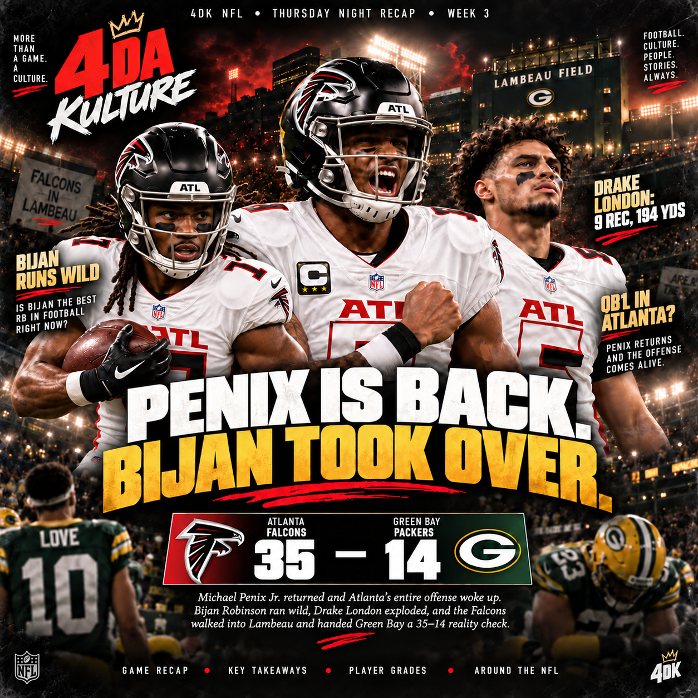

PENIX IS BACK.
BIJAN TOOK OVER.
Michael Penix Jr. returned and Atlanta's entire offense woke up. Bijan Robinson ran wild, Drake London exploded, and the Falcons walked into Lambeau and handed Green Bay a 35–14 reality check.

Atlanta scored only 16 points across the first two weeks. Then Michael Penix Jr. came back, and the Falcons put up 498 yards, controlled the ball for more than 37 minutes and scored 27 unanswered points after falling behind 7–0.
THE RETURN OF MICHAEL PENIX JR. CHANGED EVERYTHING.
Penix's first series was ugly. His third pass was intercepted, Green Bay turned the short field into a touchdown, and for a moment it looked like Atlanta's offensive problems were about to follow them into another week.
Then he settled down.
Penix finished 18-of-25 for 256 yards, one touchdown and one interception with a 101.4 passer rating. The numbers were good, but the bigger story was how different the offense looked with him threatening the entire field.
Atlanta had played the first two weeks with backup quarterbacks and looked stuck in mud. With Penix back, the spacing opened. The run game had room. Drake London finally had opportunities downfield. The Falcons were no longer asking the defense to survive while the offense searched for answers.
THE QB JOB SHOULD BE PENIX'S GOING FORWARD.
If Penix is healthy, Atlanta should treat Thursday as the beginning of his season — not a one-game audition.
The Falcons drafted him eighth overall to become the franchise quarterback. What we saw at Lambeau is why. He pushed the ball vertically, played with confidence after the early turnover and allowed Atlanta to use the full field again.
Tua Tagovailoa was available, but this should not turn into a weekly quarterback carousel. Penix gives Atlanta the combination that fits the rest of this roster best: arm talent, aggressiveness and enough downfield threat to prevent defenses from loading everything toward Bijan.
BIJAN ROBINSON HAS A REAL RB1 CASE.
Bijan was the best player on the field.
He carried 29 times for 194 yards and two touchdowns, added two catches for 19 yards and finished with 213 yards from scrimmage. His 55-yard burst flipped momentum, and his patience behind the line repeatedly turned crowded looks into productive runs.
Green Bay entered the night allowing just 2.85 yards per carry. Atlanta ran for 242 yards at 5.9 per carry.
So is Bijan the best running back in the NFL right now?
There is still a top tier with names like Christian McCaffrey, Jahmyr Gibbs, Derrick Henry, James Cook and Kenneth Walker. But Bijan absolutely belongs in the RB1 conversation. The argument for him is how complete the game is: inside runs, outside runs, vision, burst, contact balance and receiving value.
When the quarterback play is functional and defenses cannot sell out against the run, this is the version of Bijan that can take over a game without Atlanta having to manufacture touches for him.
DRAKE LONDON FINALLY GOT TO PLAY LIKE A WR1.
London entered Thursday with just six catches for 80 yards through Atlanta's first two games.
At Lambeau he caught nine passes for 194 yards, including gains of 68 and 40 yards.
That is what Penix's presence changes. London is too physical and too good at the catch point to spend entire Sundays living on short routes while the offense struggles to push the ball. His big night was not separate from Penix's return — it was part of the same story.
Atlanta finally had its quarterback, running back and No. 1 receiver affecting the game at the same time.
ATLANTA WON THE GAME PHYSICALLY.
The Falcons ran 41 times for 242 yards and three touchdowns. They converted six of 10 third downs and held the ball for 37:05.
That is how a road team takes the crowd out of Lambeau. Green Bay scored first. Atlanta answered, took control and never gave the Packers enough possessions to find any rhythm.
The Falcons also did not need Penix to throw 40 times. They built the game around Bijan, used Penix to punish Green Bay for crowding the box and forced the Packers to chase.
GREEN BAY IS 1–2. SHOULD THEY BE WORRIED?
Three games is too early to declare a season broken. But the concern is not just the record — it is how one-dimensional Green Bay looked.
The Packers ran the ball only nine times for 17 yards. Jordan Love attempted 53 passes and finished 28-of-53 for 312 yards, two touchdowns and an interception.
Matthew Golden and Christian Watson produced through the air, but the offense had no balance. Once Atlanta controlled the line of scrimmage, Green Bay was forced into obvious passing situations for most of the night.
MICHAEL PENIX JR.
JORDAN LOVE
THE PACKERS MISS JOSH JACOBS BADLY.
Jacobs remains unavailable on the Commissioner's Exempt List, and Green Bay's offense is feeling the difference.
The point is not that one running back magically fixes everything. Green Bay was also dealing with offensive-line injuries Thursday. But Jacobs gives this offense a physical identity it currently does not have.
He can absorb volume, finish runs, keep the offense ahead of the chains and force defenses to honor play action. Without that presence, the Packers' backs combined for almost nothing against Atlanta, and Love was asked to carry the entire offense.
Fifty-three pass attempts and 17 rushing yards is not the formula Green Bay wants.
WHAT DOES MICAH PARSONS CHANGE?
A lot — but not everything.
Parsons is still working his way back from reconstructive ACL surgery, and his rehab timeline has pointed toward a return after the opening portion of the season. When he gets back, Green Bay adds one of the league's premier pressure players.
That matters because Parsons can change protection rules, create pressure without blitzing and make every other front-seven player more dangerous.
But Thursday was not only a pass-rush problem. Atlanta ran for 242 yards. Green Bay had problems with fits, tackling, possession time and an offense that could not stay balanced.
Parsons raises the defense's ceiling. He should not be treated like a one-man cure for every issue Atlanta exposed.
GREEN BAY'S OFFENSE HAS OTHER PROBLEMS TOO.
The Packers were without receiver Jayden Reed and multiple offensive linemen, including guard Aaron Banks and tackle Zach Bako-Bewele. That context matters.
Love still found some explosives — Golden went for 100 yards and Watson for 96 — but the offense never had a sustainable identity. Protection breakdowns, drops, misses and the complete absence of a run game kept Green Bay chasing.
The offense is talented enough to recover. The question is how quickly it can get healthier and whether somebody in the backfield can give Love support while Jacobs remains unavailable.
ATLANTA'S SEASON FINALLY FEELS LIKE IT STARTED.
The Falcons are still only 1–2. One win does not erase the first two weeks.
But Thursday gave us the first look at the version of Atlanta that made the roster interesting in the first place.
Penix gave the offense structure. Bijan controlled the game. London stretched the field. The Falcons played through their stars instead of around their problems.
If Penix remains healthy, Atlanta now has an actual foundation to build from.
ATLANTA FINALLY LOOKED ALIVE.
Michael Penix Jr.'s return did more than upgrade one position. It changed the geometry of the offense. Bijan Robinson suddenly had space to look like one of the best backs in football. Drake London finally got real WR1 opportunities. Atlanta controlled the line of scrimmage and turned Lambeau quiet.
For Green Bay, 1–2 is not a death sentence. But the Packers cannot live with no running game, an injured offensive line and a defense waiting on Micah Parsons to solve everything.
Atlanta found something Thursday. Green Bay has some shit to figure out.
Thursday → TNF recap. Sunday → full Sunday recap. Monday → MNF headline. Tuesday → Power Rankings + MVP/Rookie Watch.
← THURSDAY NIGHT RECAPS ARCHIVE